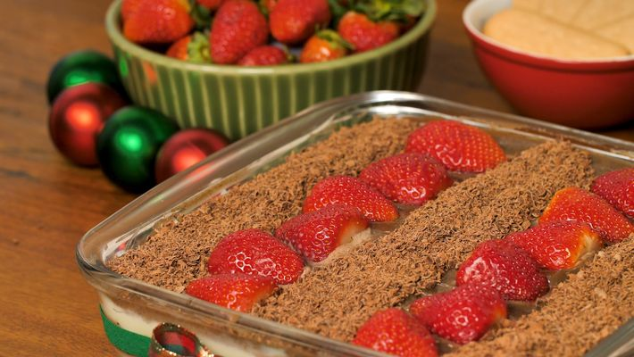

PAVÊ SIMPLES DE CHOCOLATE

Ingredientes:
• 1 lata de creme de leite
• 1 lata de leite (a mesma medida da lata de creme de leite)
• 2 latas de leite condensado
• 2 gemas
• 2 colheres de maisena
• 3 colheres de chocolate em pó ou achocolatado
• biscoito maisena
• leite para molhar os biscoitos
• raspas de chocolate (opcional)
• manteiga sem sal ou margarina, só para dar o ponto
Modo de Preparo:
1. Primeiro, pegue a lata de leite condensado, as gemas, a maisena e o leite.
2. Coloque no fogo e deixe até que fique um creme, reserve.
3. Coloque a segunda lata de leite condensado com um pouco de margarina e o chocolate.
4. Deixe no fogo até ficar um creme tipo brigadeiro.
5. Desligue o fogo e junte com o creme de leite.
| Montagem |
1. Coloque primeiro o creme branco.
2. Em seguida, mergulhe os biscoitos no leite e coloque sobre o creme branco.
3. Depois, coloque o creme preto e acrescente as raspas de chocolate sobre ele.
4. Deixe no congelador durante 2 horas.
VOLTAR